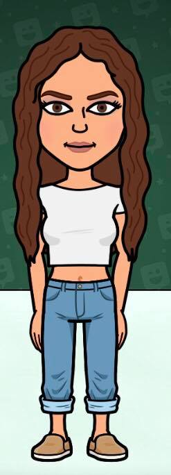

© Georgina Ryder
Contact
Work experience
Skills
About me
Qualifications
Hobbies

QUALIFICATIONS
Graduated from southampton with a 2:1 in BA Hons in Advertsing
Media Studies : B English Language: C Geogrpahy: D
10 GCSE including English, Math and Science